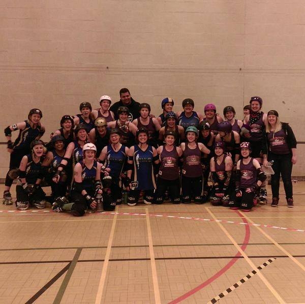
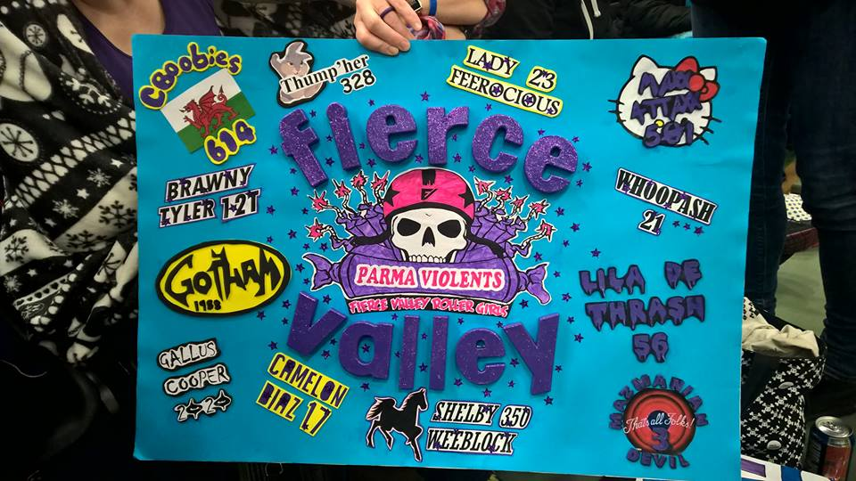
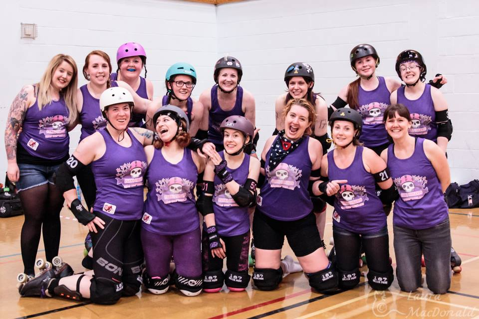

Fierce Valley Roller Girls - Review of 2015
2015 was another busy year for Fierce Valley Roller Girls, highlighted by topping their tier in the first ever British Champs, and rounded off with a fifth birthday celebration. We spoke to Chair and Parma Violent WhoopAsh for her take on the year.

November 2015 marked the end of your first year as Chair of Fierce Valley Roller Girls. Tell us a little about your experience in this position this year.
This year has been a whirlwind of activity for FVRG with many highs and thankfully just a couple of lows. Overall I’m ridiculously proud of what we have achieved.
Griz (one of FVRG’s founders) had been Chair since FVRG’s inception and she left some pretty big shoes to fill. Luckily I had sat on the Board with Griz (as her Vice Chair) for the year before so had learned direct from the master :-) and was familiar with how the league operates. Having attended UKROC in 2014 I was also full of ideas of what we should be focusing on going forward to grow and strengthen the league.
The Board were incredibly busy throughout the year, and whilst we didn’t achieve everything we set out to, we did achieve a lot, and this is a testament to the effort and support of the other Board members. We have a clear plan of activity for next year too so we’re taking a well earned break over the Christmas period and will be back raring to go in January.
FVRG took part in the first British Champs this year, what did this mean for the league? What made it different from previous years, and how did the team prepare?
Being part of Champs has led to real friendships being formed between ourselves and the other leagues involved. We already had links with the local leagues, but now have friendships and support links with both Preston and Spa Town due to meeting them, and partying with them, numerous times over the year. This is one of the key things I’ve personally taken away.
From a league perspective, being part of Champs has allowed us to show the calibre of our Refs and Officials and our ability to host a good game. We were also able to give lots of support to the less experienced leagues within the tier, providing Head NSO’s etc.
When it comes to prep for the team we pretty much continued as is. Our Coaches tailor our training in the run up to games based on our opponents and what we areas we need to develop. We run a charter of 20 and select our teams from that charter. Most of our charter have skated together for a long time so are all fairly bonded. One thing we did try to work on was our endurance for the final. Clearly we still have a bit of work to do there, as anyone that seen the Wolverhampton game will testify ;-)

Away from the track, how has the league developed this year?
We started our year by getting the whole league together to workshop and agree FVRG’s vision, mission statement and values. We had a great turn out and it was inspiring hear everyone’s views on what we are and what we want to become, and encouraging that generally speaking we all aspired to the same things. For anyone interested, you can check out what we came up with on our website (http://www.fvrg.co.uk/about/our-values/).
At the close of the previous year we had identified two key areas of focus. For the first time ever we had closed the year making a loss financially so we agreed that one of our key focuses for the year should be fundraising. We also identified that our recruitment and retention of skaters needed attention; with more leagues than ever in the central belt we agreed it was important that we promote what is unique about FVRG and also make more effort to integrate new skaters into the league fully, and at an earlier stage. Throughout the year we put on many successful fundraising events ranging from smaller scale events like car boot, clothes swaps & public scrims, to our hugely successful pub quiz, Halloween party and 5th Birthday Ball. We also introduced some halftime activities to our games ‘chuck a duck’ anyone? J To support our skater recruitment and retention objective we rebranded our Fresh Meat promotion, relaunched our new skater buddy system (Fierce Friends), and also implemented Welfare Reps. I’m pleased to say both of these initiatives were hugely successful and we’ve closed the year in profit and with healthy numbers in our Fresh Meat and Intermediate sections.
Other less exciting, but equally important, development was the formalisation of various policies and the introduction of a league contribution measure.
What do you think was FVRG's biggest achievement in 2015?
I can’t pick just one thing here, I think our achievements are all intertwined. Overall I am most impressed with how the league have rallied at the tougher times and continued to act in a positive and professional manner throughout the year. We celebrate our successes but are always looking at where we can improve and what we can do differently next time to make things even better.
And what challenges did the league face?
Like many other leagues across the UK, one of our key challenges is balancing the work load across the league. Everyone has lives outside of Derby, but if someone doesn’t do it, it doesn’t get done. We struggled a bit to get people to take on elected positions this year which led to the Board managing more areas of the league than we would have liked. However, the work that we’ve done on bringing in new skaters and getting them engaged at an earlier stage is really starting to pay off. At our recent AGM we had nominees for every position and no awkward ‘someone needs to do this guys’ moments. We’ve also found that league engagement is up. Maintaining this, and improving it further is one of our key objectives for this year.
 Photo courtesy of Laura MacDonald
What have been your personal highlights?
I really struggled with what to pick here, there have been lots of personal highlights. From a league perspective I think I’ll need to go for facilitating the production of our vision, mission statement, and values. From skating I’d have to say the Manchester game. We skated short but played as a really solid team and I remember doing some stuff on track that was effective and I was pretty happy with.
Finally, can you give us any idea of what to expect from FVRG in 2016, and beyond?
Absolutely. The Parma Violents are taking part in Champs 2016 and are looking forward to stepping up to Tier 3, further developing our skating ability and team cohesion, playing more challenging teams, and forming links with other leagues. We’re hosting a charity Sur5al game in February, in supporting Stirling’s Woman’s Aid, and play Zurich Roller Girls in April. The calendar is filling up for the rest of the year too with so many teams wanting to play us. From a league perspective, FVRG have excellent Coaches and Officials, and 2016 will see us formalising training plans to support members developing into these roles. We’ll also continue to work on our skater recruitment and retention, put on fun events for the league and our fans, and support our local community.